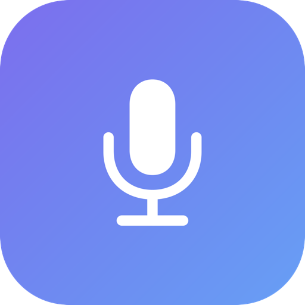

Hold one key, speak naturally, and your words appear in any app on your Mac — email, Slack, docs, anywhere. All on-device.
Download for MacNo window to switch to, no buttons to click. It works wherever your cursor is.
Works in every app — your browser, Messages, Notes, code editors, search bars. If you can type there, you can talk there.
Your voice is transcribed locally on your Mac using Apple's speech engine. Nothing is uploaded. Works offline.
Turn on Claude cleanup to automatically remove “um”s, fix grammar, and polish punctuation as you go.
Release the key and your text is pasted in a blink. No round-trips, no waiting.
Native Swift app tuned for M-series chips. Lightweight, fast, and lives quietly in your menu bar.
No subscription, no account. Download it and start talking.
Set it up once, then forget it's even there.
Download the app and drag it to your Applications folder.
Allow Microphone, Speech Recognition, and Accessibility when asked.
Hold Right ⌥ Option, speak, release. Your words appear.
Get the free Chrome extension and dictate straight into Gmail, X, ChatGPT, or any web text box — no Mac app needed. Works on Windows & Linux too.
chrome://extensions in Chrome.Browser dictation uses the browser's built-in speech engine (cloud). For fully on-device, private dictation, use the Mac app above.
Download Wispr Clone and try it in the next app you open.
Download for Mac (.dmg)Wispr-Clone.dmg and drag Wispr Clone into your Applications folder.Why the warning? This app isn't notarized by Apple yet, so macOS asks you to approve it manually. It's safe — the code is open source on GitHub.